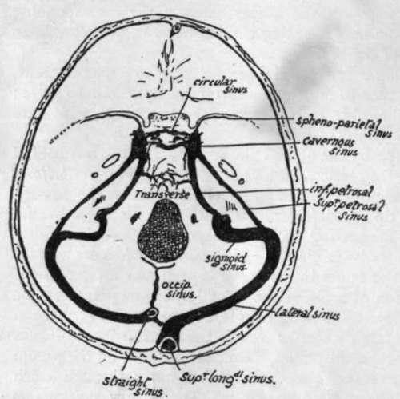
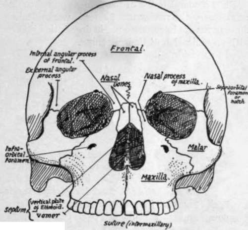

Facial Skeleton
Description
This section is from the book "The Anatomy Of The Human Skeleton", by J. Ernest Frazer. Also available from Amazon: The anatomy of the human skeleton.
Facial Skeleton
This is situated altogether in front of the level of the pterygoid processes, with the exception of the mandible.
Looking at the skull from the front (Fig. 164), the two upper jaws or maxilla are seen to constitute the side margins of the nasal opening and to meet each other below it. Each maxilla forms, by its upper surface, the greater part of the floor of the orbit and is prolonged up the inner margin of the orbital opening as a nasal process which meets the frontal. The two nasal bones also articulate with the frontal and separate the nasal processes of the two maxillae. The maxillae meet each other, not only on the front, but also below, forming a large part of the hard palate ; this can be seen on looking at the skull from below. Now look into the nasal cavity from the front : its floor is evidently formed by the bony palatine processes of the maxillae, and a bony septum is seen dividing the cavity into right and left.
Fig. 163.-Position of cranial sinuses. Cavernous sinus is on the side of body of sphenoid ; sphenoparietal sinus reaches it along the edge of lesser wing, and superior and inferior petrosal connect it with sinuses in posterior fossa. Transverse and circular sinuses are plexiform connections across the middle line. Observe that the right lateral receives the blood from the superior longitudinal sinus and is therefore larger than the left, which as a rule only drains the straight sinus. The " torcular Herophili " is the small connection between the right and left systems near the internal occipital protuberance. The right lateral sinus usually comes further forward in the petro-mastoid region than the left.
The outer margin of the orbital opening is not formed by the maxilla, but by the malar which rests by a broad base on the maxilla and reaches to the external angular process of the frontal above. Looked at from the side the malar is seen to throw a process backwards and outwards to complete the zygomatic arch by joining the zygomatic process of the temporal : another part of the bone turns inwards and backwards, forms the front wall of the temporal fossa, and articulates with the great wing of the sphenoid.
The orbital and nasal cavities can be more conveniently examined at a later stage, but it is well to notice here that the mass of the ethmoid separates the two orbits, the inner walls of which are largely made by the smooth os planum or side-plate of the ethmoid. Being in this situation the ethmoid forms the upper part of the nasal cavities, and its central vertical plate is in the upper part of the bony septum : the lower and back part of the septum is made by the vomer which can be seen between the posterior nasal openings, articulating with the inferior surface of the body of the sphenoid. The mass of the ethmoid is placed against the front of the body of the sphenoid.
The nasal cavities, then, lie not only between the maxillae but at a higher level also, i.e., between the orbits. This higher part is in the ethmoid, and a central vertical plate of this bone divides the two cavities here, and articulates with the vomer below.
Now turn the skull up and examine its under surface (Fig. 161), where we have seen that the maxillae are joined below by palatine processes, which form the greater part of the hard palate and floor of the nasal cavities. But behind these processes two other smaller bones are seen completing the hard palate : these are portions of the palate bones. It can be seen that the palatine process of each maxilla does not extend back for the full depth of the bone, and the interval is filled by the palate. The palate bone in its greater part is placed vertically against the internal aspect of the maxilla in its back part, reaching down to the interval behind the palatine process ; here the palate bone bends in at right angles to complete the bony palate ; it is thus divisible into a vertical portion applied to the maxilla, and a horizontal part that helps to form the palate. These general relations can be comprehended from a short study of the skull.
But the palate bone also projects back further than the level of the maxilla, and the posterior border of its vertical plate is applied to the front edge of the internal pterygoid plate, so that the upper jaw is held away from the pterygoid plate by this projection of the palate. Look at the skull from the side and see that the external pterygoid palate is separated by an interval (spheno-maxillary fossa) from the maxilla, and this fossa has its inner wall made by the vertical plate of palate passing back from the inner aspect of the maxilla to articulate with the internal pterygoid plate : thus the vertical plate separates the spheno-maxillary fossa from the nasal cavity.
Fig. 164.-Facial aspect, without lower jaw.
The fossa is closed below by a mass of bone, which, in the complete skull, appears to be part of the maxilla, articulating with the lower parts of the pterygoid plates ; but this is not really so, for the maxilla does not come at all into contact with the plates, but is separated from them by this bone, which is the tuberosity of the palate protruding downwards and outwards behind the maxilla and thus firmly welding it to the pterygoid plates (see Fig. 161). So it is evident that the bones of the face are not only attached above to the cranial bones, but are also buttressed behind by the pterygoid plates, and, through the zygoma, by the temporal.
For a complete list of the names applied to different points on the skull as used in craniometry the reader must consult works dealing with that subject, but as some of these terms are in common use in description it is convenient to give a list of these here, with an indication of their meaning. In the middle line :-
Nasion
Junction of nasal and frontal bones.
Glabella
Mid-point at level of superciliary ridges.
Bregma
Junction of coronal and sagittal sutures.
Lambda
Junction of sagittal and lambdoid sutures.
Inion
External occipital protuberance.
At the side of the skull :-
Auricular Point
Centre of external meatus.
Asterion
Region where occipital, parietal, and temporal meet.
Pterion
Region where frontal, parietal, sphenoid, and temporal meet.
Reid's base-line is used for certain surgical surface markings : it is drawn back (Fig. 168) from the lower margin of the orbital opening through the auricular point, and when prolonged back passes a little distance below the inion.
Continue to: